| 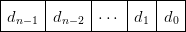 |  | 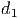 | 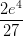 | |
Os computadores, em geral, usam a base binária para representar os números, onde as posições, chamadas de bits, assume as condições “verdadeiro” ou “falso”, ou seja, ou 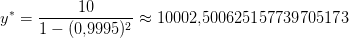. Cada computador tem um número de bits fixo e, portanto, representa uma quantidade finita de números. Os demais números são tomados por proximidade àqueles conhecidos, gerando erros de arredondamento. Por exemplo, em aritmética de computador, o número 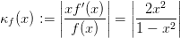 tem representação exata, logo 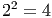, mas 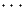 não tem representação finita, logo 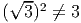.
Veja isso no Scilab:
Tipicamente um número inteiro é armazenado num computador como uma sequência de dígitos binários de comprimento fixo denominado registro.
Um registro com 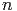 bits da forma
| 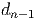 | 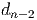 | 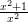 | 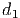 | 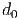 |
 .
.
Assim é possível representar números inteiros entre
|
|
O bit mais significativo (o primeiro à esquerda) representa o sinal: por convenção, significa positivo e 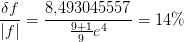 significa negativo. Um registro com 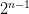 bits da forma
| 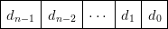 | | 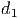 | 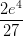 | |
O bit mais significativo (o primeiro à esquerda) representa o coeficiente de 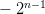. Um registro com 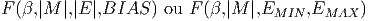 bits da forma:
| 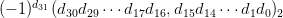 | 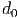 | |||
Note que todo registro começando com 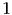 será um número negativo.
Exemplo 2.2.3. O registro com 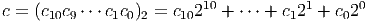 bits 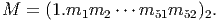 representa o número:
|
|
O registro com 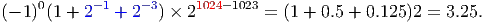 bits 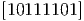 representa o número:
|
|
Note que podemos obter a representação de 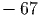 invertendo os dígitos de 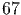 em binário e somando 1.
O sistema de ponto fixo representa as partes inteira e fracionária do número com uma quantidade fixas de dígitos.
Exemplo 2.2.6. Em um computador de 32 bits que usa o sistema de ponto fixo, o registro
| 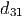 | 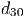 | 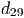 | 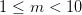 | 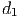 | 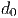 |
|
|
e
|
|
|
|
e
|
|
|
|
Observe que dígitos são usados para representar a parte fracionária, são para representar a parte inteira e um dígito, o , está relacionado ao sinal do número.
Os números e não podem ser armazenados na máquina em ponto fixo do exemplo anterior.
Entretanto, a constante
|
|
pode ser escrita de várias formas diferentes. Para termos uma representação única definimos como notação normalizada a segunda opção () que apresenta apenas um dígito diferente de zero a esquerda do ponto decimal ().
Definição 2.2.1. Definimos que
 , onde
, onde
Exemplo 2.2.8. Represente os números e em um sistema de ponto fixo de 4 dígitos para a parte inteira e 4 dígitos para a parte fracionária. Depois represente os mesmos números utilizando notação normalizada com 7 dígitos significativos.
Solução. As representações dos números e no sistema de ponto fixo são e , respectivamente. Em notação normalizada, as representações são e , respectivamente.
Observação 2.2.1. No Scilab, a representação em ponto flutuante com dígitos é dada na forma . Consulte sobre o comando format!
O sistema de ponto flutuante não possui quantidade fixa de dígitos para as partes inteira e fracionária do número.
Podemos definir uma máquina em ponto flutuante de dois modos:
Considere uma máquina com um registro de bits e base
 . Pelo padrão IEEE754, bit é usado para o sinal, bits
para o expoente e bits são usados para o significando tal que
. Pelo padrão IEEE754, bit é usado para o sinal, bits
para o expoente e bits são usados para o significando tal que
Em base não é necessário armazenar o primeiro dígito (por quê?).
Por exemplo, o registro
![[0|100 0000 0000|1010 0000 0000...0000 0000]](main265x.png)
Uma maneira de representar os expoentes inteiros é deslocar todos eles uma mesma quantidade. Desta forma permitimos a representação de números negativos e a ordem deles continua crescente. O expoente é representado por um inteiro sem sinal do qual é deslocado o BIAS.
Tendo dígitos para representar o expoente, geralmente o é predefinido de tal forma a dividir a tabela ao meio de tal forma que o expoente um seja representado pelo sequência .
Exemplo 2.2.9. Com bits, pelo padrão , temos que
. Assim . Como queremos que esta
sequência represente o  , definimos , pois
, definimos , pois
Com bits, temos e . E com bits, temos e .
Com bits temos
|
|
O maior expoente é dado por  e o menor expoente é dado por
e o menor expoente é dado por
 .
.
O menor número representável positivo é dado pelo registro
![[0|000 0000 0001|0000 0000 0000...0000 0000]](main287x.png)
O maior número representável é dado por
O zero é um caso especial representado pelo registro
Os expoentes reservados são usados para casos especiais:
Os números subnormais3 tem a forma
Observação 2.2.2. O menor número positivo, o maior número e o menor número subnormal representáveis no Scilab são:
Outras informações sobre a representação em ponto flutuante podem ser obtidas com help number_properties.
A precisão de uma máquina é o número de dígitos significativos usado para
representar um número. Note que  em binário e para
outras bases.
em binário e para
outras bases.
O epsilon de máquina, , é definido de forma que seja o menor número representável maior que , isto é, é representável, mas não existem números representáveis em .
Utilizando uma máquina em ponto flutuante temos um número finito de números que podemos representar.
Um número muito pequeno geralmente é aproximado por zero (underflow) e um número muito grande (overflow) geralmente faz o cálculo parar. Além disso, os números não estão uniformemente espaçados no eixo real. Números pequenos estão bem próximos enquanto que números com expoentes grandes estão bem distantes.
Se tentarmos armazenar um número que não é representável, devemos utilizar o número mais próximo, gerando os erros de arredondamento.
Por simplicidade, a partir daqui nós adotaremos .
Observação 2.2.3. O chamado modo de exceção de ponto flutuante é controlado pela função ieee. O padrão do Scilab é ieee(0). Estude os seguintes resultados das seguintes operações usando os diferentes modos de exceção:
 .
.